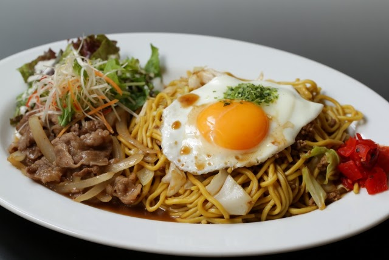
| 営業時間 | 月・火・水・木・金・土・日 11:00〜14:00, 16:30〜23:00 |
|---|---|
| 定休日 | なし(要最終確認) |
| 住所 | 秋田県横手市前郷一番町７−１３ 食い道楽ビル |
| 予約 | 可 — ☎ 0182-33-2925 ／ 公式サイト |
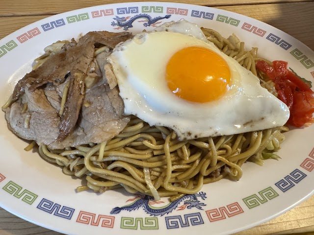
| 営業時間 | 月・火・水・木・金・土・日 11:30〜14:00 |
|---|---|
| 定休日 | なし(要最終確認) |
| 住所 | 秋田県横手市大屋新町堂ノ前２２−３ |
| 予約 | 要確認 — ☎ 0182-33-5687 |
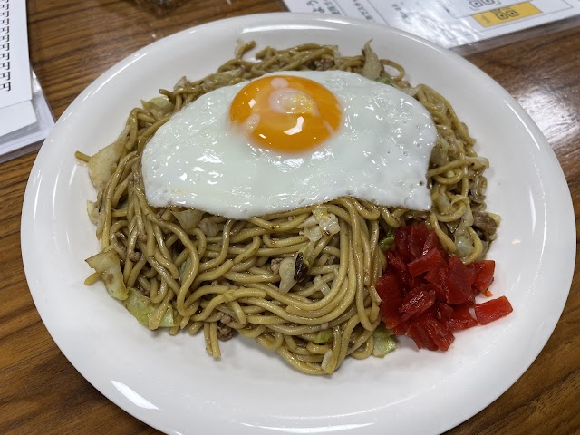
| 営業時間 | 火・水・木・金・土 17:30〜22:00 |
|---|---|
| 定休日 | 月・日曜 |
| 住所 | 秋田県横手市駅前町３−１１ |
| 予約 | 可 — ☎ 0182-33-2248 ／ 公式サイト |
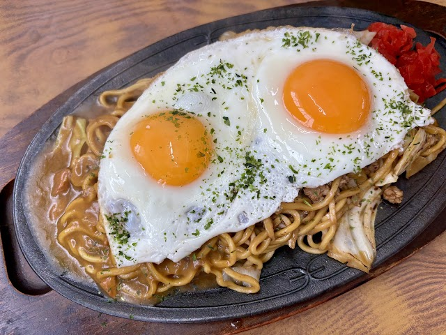
| 営業時間 | 月・火・水・木・金・土 11:00〜14:30 |
|---|---|
| 定休日 | 日曜 |
| 住所 | 秋田県横手市松原町２−３５ |
| 予約 | 要確認 — ☎ 0182-32-4857 |
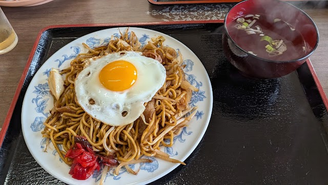
| 営業時間 | 月・火・水・木・金・土 11:00〜14:00 |
|---|---|
| 定休日 | 日曜 |
| 住所 | 秋田県横手市旭川１丁目２−２９ |
| 予約 | 要確認 — ☎ 0182-32-3622 |
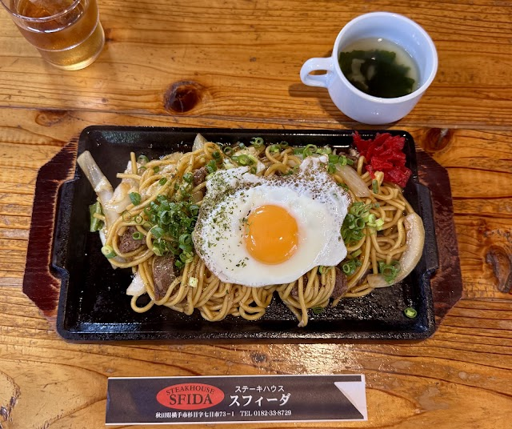
| 営業時間 | 火・水・木・金・土・日 11:00〜15:00, 17:30〜21:00 |
|---|---|
| 定休日 | 月曜 |
| 住所 | 秋田県横手市杉目七日市７３−１ |
| 予約 | 可 — ☎ 0182-33-8729 ／ 公式サイト |
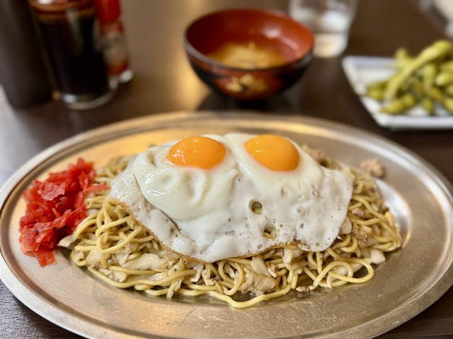
| 営業時間 | 月 10:00〜16:30 ／ 火・水・木・金・土・日 10:00〜18:00 |
|---|---|
| 定休日 | なし(要最終確認) |
| 住所 | 秋田県横手市平鹿町浅舞浅舞２５４ |
| 予約 | 要確認 — ☎ 0182-24-0734 |
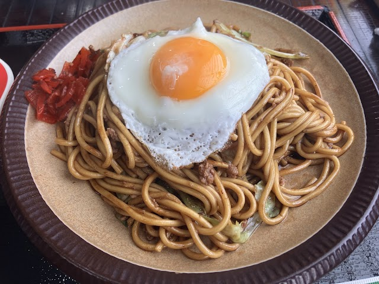
| 営業時間 | 月・火・木・金・土・日 11:00〜14:00 |
|---|---|
| 定休日 | 水曜 |
| 住所 | 秋田県横手市十文字町佐賀会下沖田２０−１ |
| 予約 | 要確認 — ☎ 0182-42-2988 |
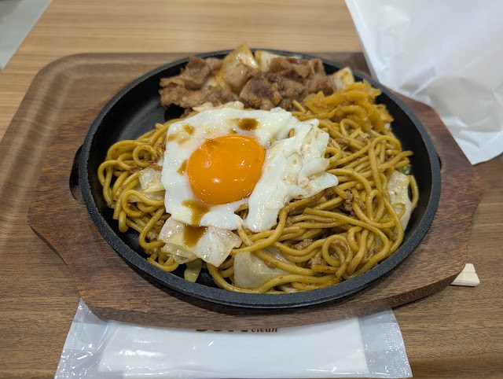
| 営業時間 | 月・火・木・土・日 10:30〜14:00 |
|---|---|
| 定休日 | 水・金曜 |
| 住所 | 秋田県横手市十文字町海道下２１−４ |
| 予約 | 要確認 — 公式サイト |
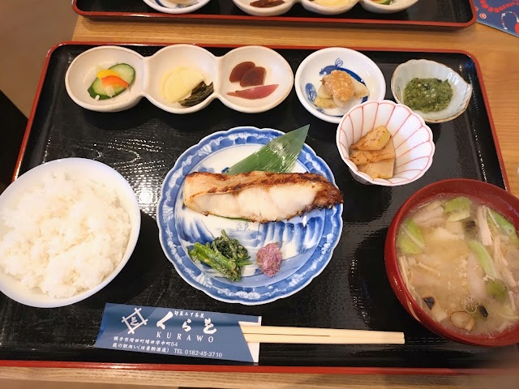
| 営業時間 | 月・金・土・日 10:00〜16:00 |
|---|---|
| 定休日 | 火・水・木曜 |
| 住所 | 秋田県横手市増田町増田中町６４ |
| 予約 | 可 — ☎ 0182-45-3710 ／ 公式サイト |
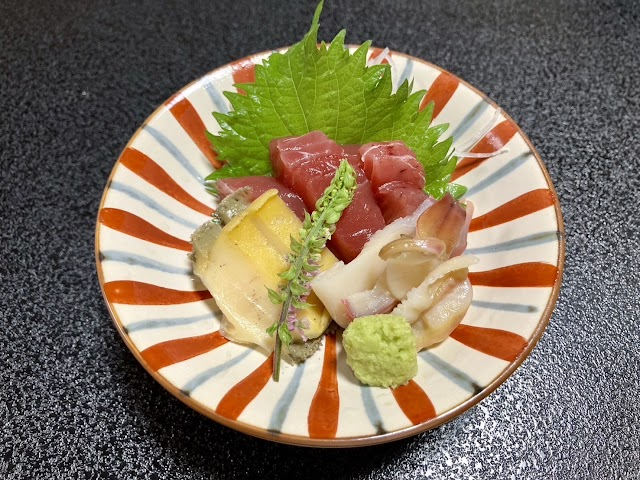
| 営業時間 | 月・火・水・木・金・土・日 11:00〜22:00 |
|---|---|
| 定休日 | なし(要最終確認) |
| 住所 | 秋田県横手市大町６−２２ |
| 予約 | 可 — ☎ 0182-32-1175 ／ 公式サイト |
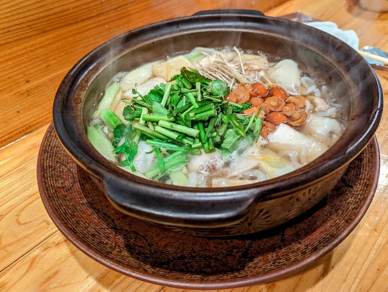
| 営業時間 | 月・火・水・木・金・土 11:30〜14:00, 16:00〜22:00 |
|---|---|
| 定休日 | 日曜 |
| 住所 | 秋田県横手市前郷一番町７−９ |
| 予約 | 可 — ☎ 0182-33-5577 ／ 公式サイト |
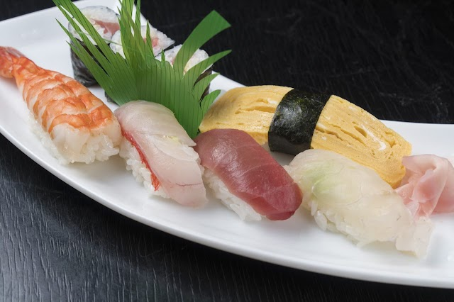
| 営業時間 | 月・火・日 11:30〜14:00, 17:00〜22:00 ／ 水・木・金・土 10:00〜22:00 |
|---|---|
| 定休日 | なし(要最終確認) |
| 住所 | 秋田県横手市田中町４−２１ |
| 予約 | 可 — ☎ 0182-33-4171 ／ 公式サイト |
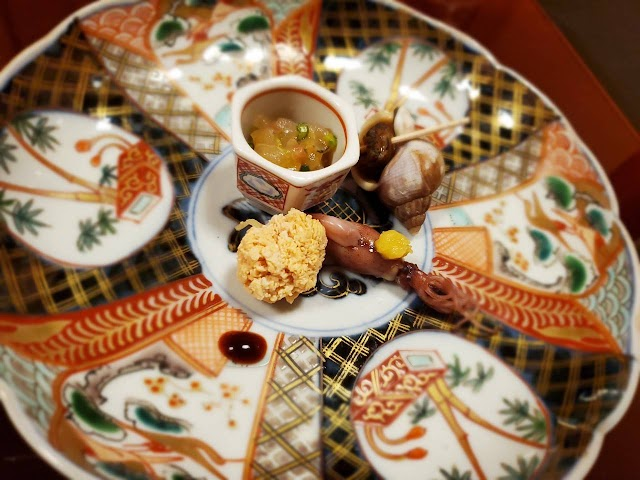
| 営業時間 | 月・火・水・木・金・土・日 11:30〜22:00 |
|---|---|
| 定休日 | なし(要最終確認) |
| 住所 | 秋田県横手市平鹿町浅舞浅舞３６６−１ |
| 予約 | 可 — ☎ 0182-23-6343 |
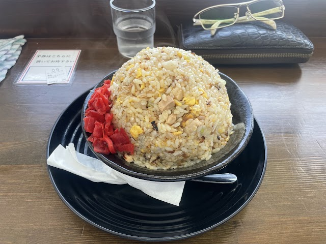
| 営業時間 | 月・火・水・金・土・日 11:00〜14:00 |
|---|---|
| 定休日 | 木曜 |
| 住所 | 秋田県横手市山内大沢下長瀞２３−５ |
| 予約 | 要確認 — ☎ 0182-23-8061 ／ 公式サイト |
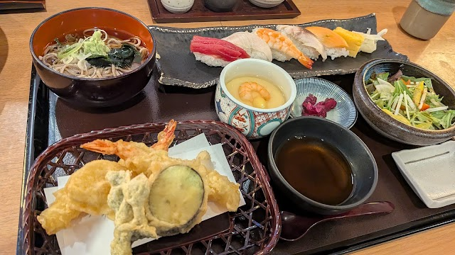
| 営業時間 | 月・火・水・木・金・土・日 11:00〜14:00, 17:00〜21:00 |
|---|---|
| 定休日 | なし(要最終確認) |
| 住所 | 秋田県横手市駅前町７−７ ホテルプラザアネックス横手 ２階 |
| 予約 | 可 — ☎ 0182-32-7777 ／ 公式サイト |
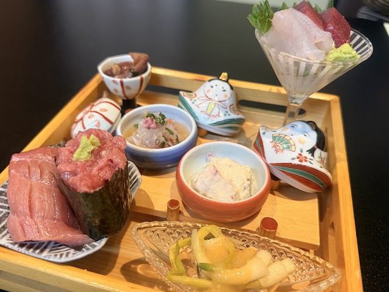
| 営業時間 | 月・火・水・木・金・土 11:30〜14:00, 17:30〜21:30 |
|---|---|
| 定休日 | 日曜 |
| 住所 | 秋田県横手市駅西２丁目１−８ |
| 予約 | 可 — ☎ 0182-32-1128 ／ 公式サイト |
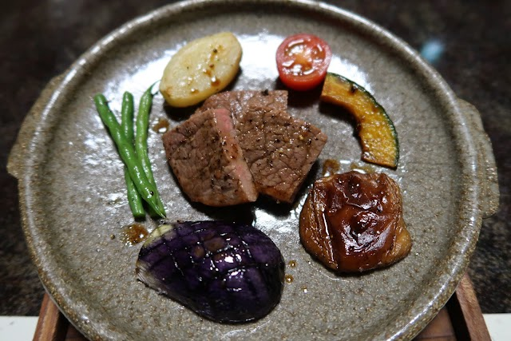
| 営業時間 | 月・火・水・木・金・土・日 11:00〜22:00 |
|---|---|
| 定休日 | なし(要最終確認) |
| 住所 | 秋田県横手市旭川２丁目３−１９ |
| 予約 | 可 — ☎ 0182-32-0309 ／ 公式サイト |
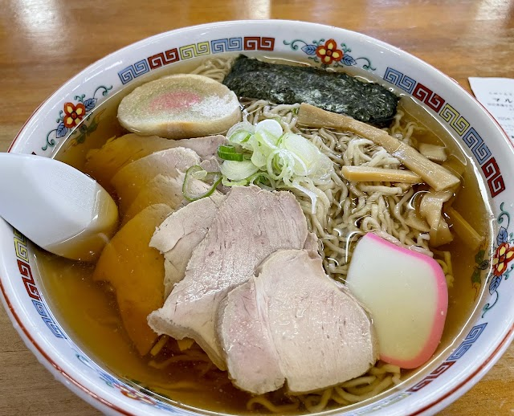
| 営業時間 | 月・水・木・金・土・日 11:00〜19:00 |
|---|---|
| 定休日 | 火曜 |
| 住所 | 秋田県横手市十文字町佐賀会上沖田３７−８ |
| 予約 | 要確認 — ☎ 0182-42-0243 ／ 公式サイト |
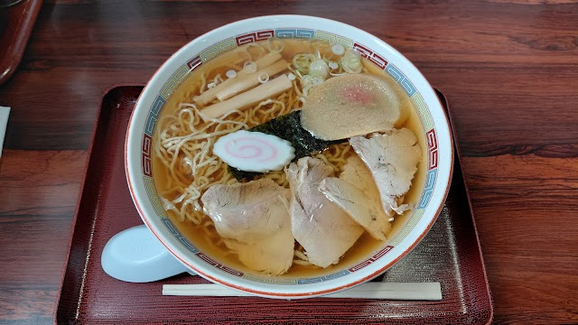
| 営業時間 | 月・火・水・木・金 11:00〜17:00 ／ 土・日 11:00〜18:00 |
|---|---|
| 定休日 | なし(要最終確認) |
| 住所 | 秋田県横手市十文字町梨木羽場下６３−１ |
| 予約 | 要確認 — ☎ 0182-42-1360 ／ 公式サイト |
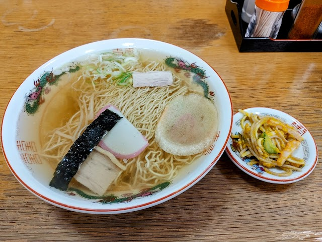
| 営業時間 | 月・火・水・金・土・日 11:00〜14:00 |
|---|---|
| 定休日 | 木曜 |
| 住所 | 秋田県横手市十文字町本町７−１ |
| 予約 | 要確認 — ☎ 0182-42-1056 ／ 公式サイト |
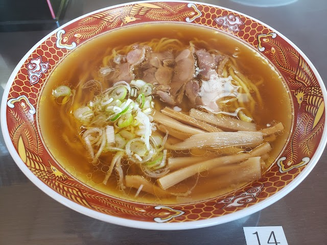
| 営業時間 | 月・水・木・金・土・日 11:00〜14:00 |
|---|---|
| 定休日 | 火曜 |
| 住所 | 秋田県横手市三枚橋２丁目２−１０ |
| 予約 | 要確認 |
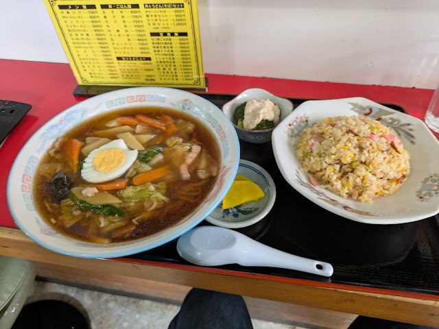
| 営業時間 | 火・水・木・金・土・日 11:00〜21:00 |
|---|---|
| 定休日 | 月曜 |
| 住所 | 秋田県横手市大森町湯の沢１−３ |
| 予約 | 可 — ☎ 0182-26-2039 |
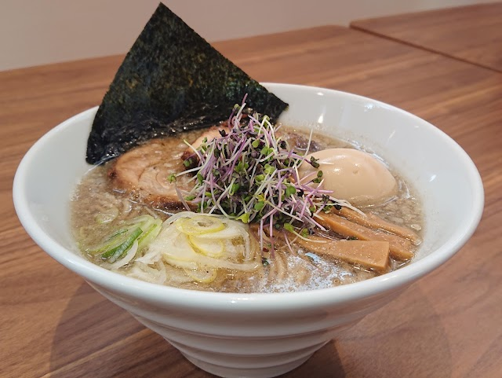
| 営業時間 | 月・火・水・金 11:00〜14:00 ／ 土・日 11:00〜14:00, 17:00〜20:00 |
|---|---|
| 定休日 | 木曜 |
| 住所 | 秋田県横手市条里３丁目２−５５ |
| 予約 | 要確認 — 公式サイト |
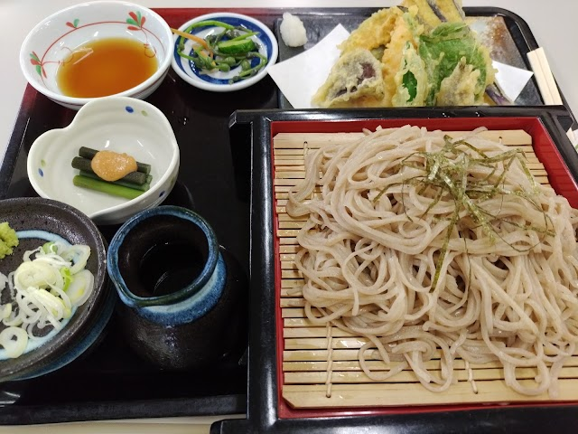
| 営業時間 | 月・水・木・金・土・日 11:00〜14:00 |
|---|---|
| 定休日 | 火曜 |
| 住所 | 秋田県横手市増田町狙半内夏虫沢１８８ |
| 予約 | 要確認 — ☎ 0182-45-9002 ／ 公式サイト |
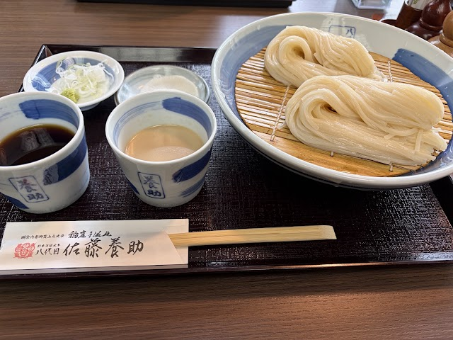
| 営業時間 | 月・火・水・木・金 11:00〜15:00 ／ 土・日 11:00〜17:00 |
|---|---|
| 定休日 | なし(要最終確認) |
| 住所 | 秋田県横手市赤坂富ケ沢６２−４６ |
| 予約 | 可 — ☎ 0182-33-8833 ／ 公式サイト |
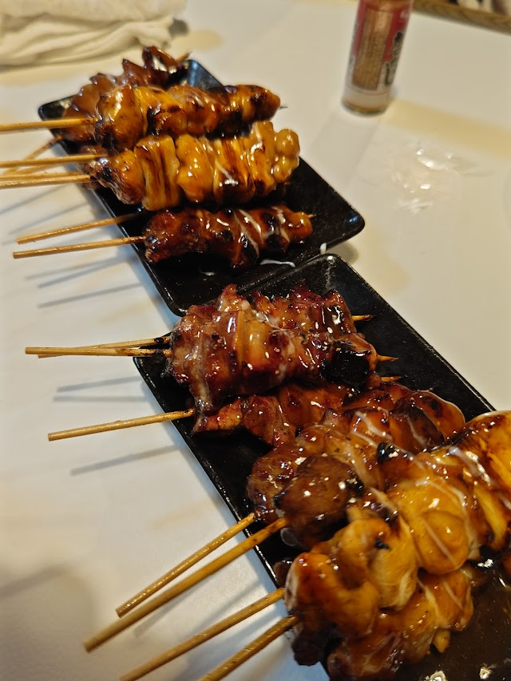
| 営業時間 | 月・火・水・木・金・土 17:30〜21:00 |
|---|---|
| 定休日 | 日曜 |
| 住所 | 秋田県横手市平城町５−２４ |
| 予約 | 可 — ☎ 0182-33-2417 |
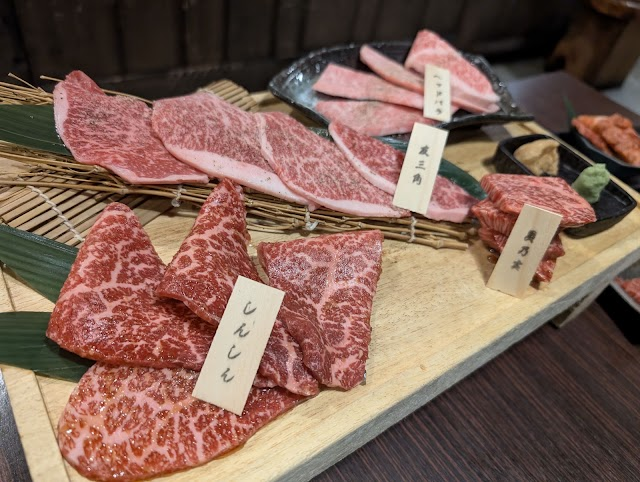
| 営業時間 | 月・火・水・木・金・土・日 11:30〜14:30, 17:00〜21:30 |
|---|---|
| 定休日 | なし(要最終確認) |
| 住所 | 秋田県横手市条里３丁目２−２ |
| 予約 | 可 — ☎ 0182-35-5529 ／ 公式サイト |
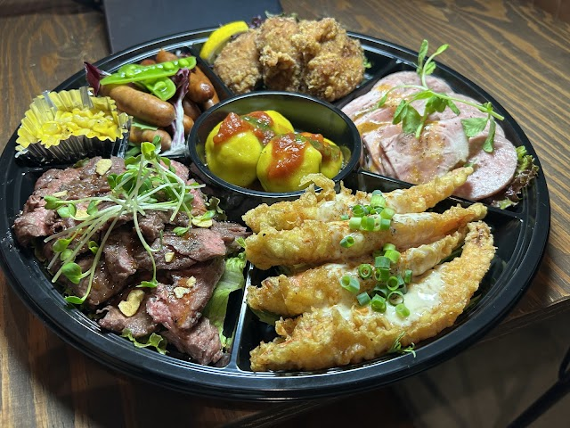
| 営業時間 | 月・水・木・金・土・日 17:30〜23:00 |
|---|---|
| 定休日 | 火曜 |
| 住所 | 秋田県横手市寿町９−８ 寿ビル 2F |
| 予約 | 可 — ☎ 0182-33-5066 ／ 公式サイト |
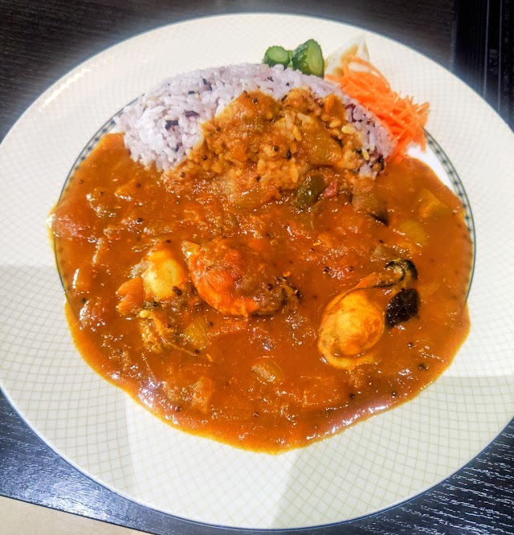
| 営業時間 | 月・火・木・金・土 11:30〜14:30, 17:30〜22:00 ／ 水 11:30〜14:30, 17:30〜20:00 |
|---|---|
| 定休日 | 日曜 |
| 住所 | 秋田県横手市駅前町７−１７ ７ |
| 予約 | 可 — ☎ 0182-38-8471 ／ 公式サイト |
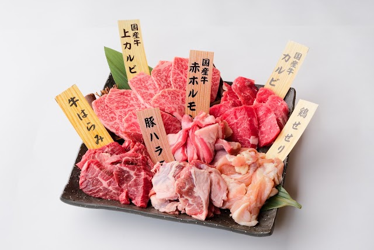
| 営業時間 | 月・火・水・木・金・土・日 17:00〜22:00 |
|---|---|
| 定休日 | なし(要最終確認) |
| 住所 | 秋田県横手市十文字町梨木羽場下１４−２６ |
| 予約 | 可 — ☎ 0182-42-0099 ／ 公式サイト |
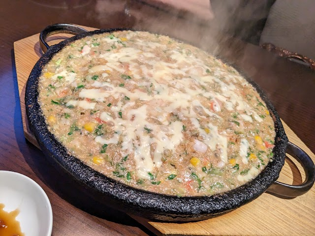
| 営業時間 | 月・水・木・金・土・日 17:00〜22:00 |
|---|---|
| 定休日 | 火曜 |
| 住所 | 秋田県横手市十文字町曙町３１−３ |
| 予約 | 可 — ☎ 0182-42-3081 ／ 公式サイト |
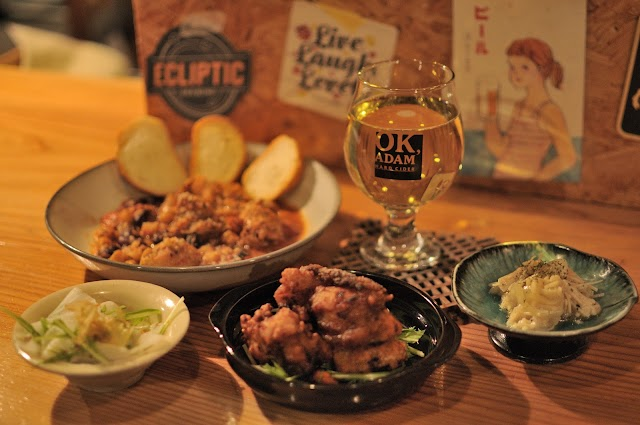
| 営業時間 | 19:00〜23:30(フードL.O.22:30) |
|---|---|
| 定休日 | 不定休 |
| 住所 | 秋田県横手市十文字町曙町7−３ |
| 予約 | 要確認 — ☎ 0182-23-5336 ／ 公式サイト |
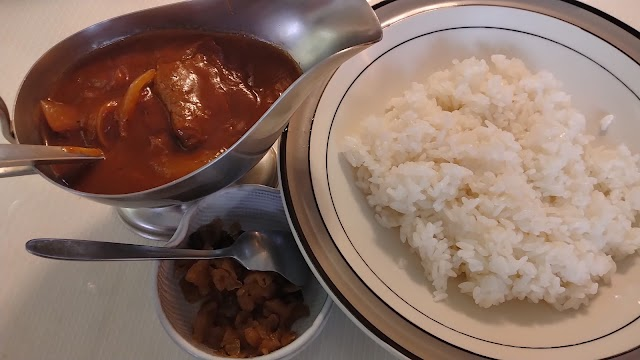
| 営業時間 | 月・火・水・木・金・土・日 11:30〜13:30, 17:30〜20:00 |
|---|---|
| 定休日 | なし(要最終確認) |
| 住所 | 秋田県横手市大町５−９ |
| 予約 | 可 — ☎ 0182-32-7259 |
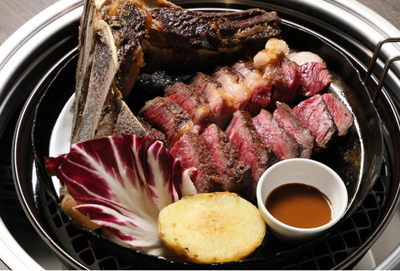
| 営業時間 | 月・火・水・木・金・土・日 11:30〜14:30, 17:30〜21:30 |
|---|---|
| 定休日 | なし(要最終確認) |
| 住所 | 秋田県横手市婦気大堤田久保下２０４−１ |
| 予約 | 可 — ☎ 0182-35-5539 ／ 公式サイト |
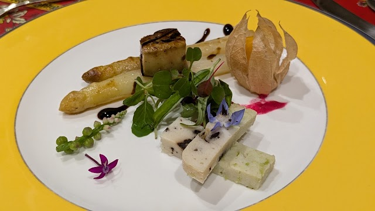
| 営業時間 | 月・水・木・金・土・日 11:30〜14:00, 17:30〜22:00 |
|---|---|
| 定休日 | 火曜 |
| 住所 | 秋田県横手市十文字町通町３−７ |
| 予約 | 可 — ☎ 0182-42-0431 ／ 公式サイト |
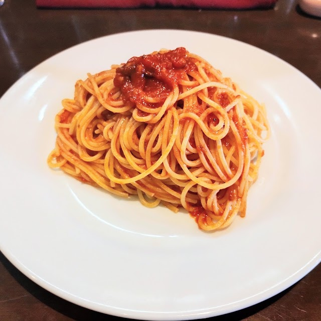
| 営業時間 | 火・水・木・金・土・日 11:30〜14:00, 17:30〜21:00 |
|---|---|
| 定休日 | 月曜 |
| 住所 | 秋田県横手市前郷一番町８−１２ |
| 予約 | 可 — ☎ 0182-23-7318 ／ 公式サイト |
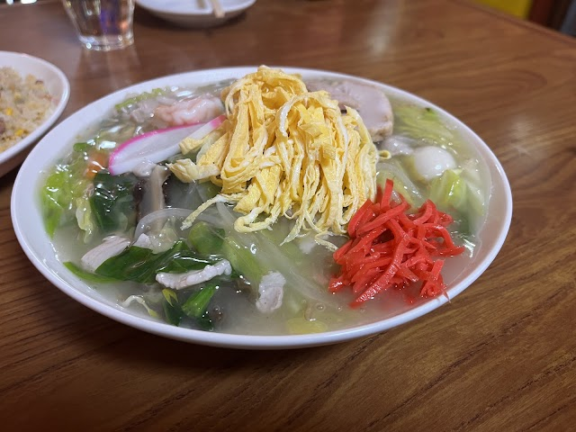
| 営業時間 | 火・水・木・金・土 11:00〜14:00, 17:00〜20:00 |
|---|---|
| 定休日 | 月・日曜 |
| 住所 | 秋田県横手市増田町増田中町４８−６ |
| 予約 | 要確認 — ☎ 0182-45-2412 |
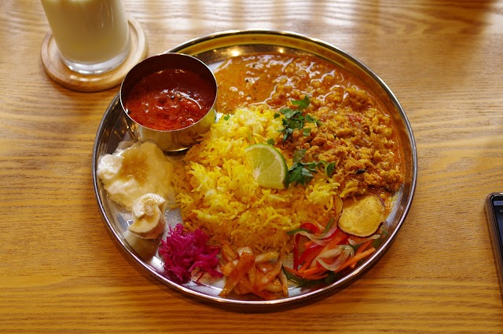
| 営業時間 | 月・火・水・木・金 12:00〜16:00 ／ 土・日 11:00〜16:00 |
|---|---|
| 定休日 | なし(要最終確認) |
| 住所 | 秋田県横手市駅前町７−７ ホテルプラザアネックス横手 ２階 駅前温泉ゆうゆうプラザ館内 1階 |
| 予約 | 要確認 — ☎ 0182-38-8757 ／ 公式サイト |
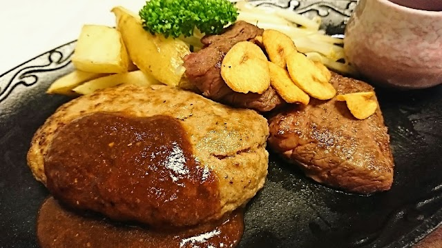
| 営業時間 | 月・火・木・金・土 11:30〜14:00, 17:00〜21:30 ／ 日 11:30〜14:00, 17:00〜21:00 |
|---|---|
| 定休日 | 水曜 |
| 住所 | 秋田県横手市安田堰端５２−１ ホテルクォードイン 内 ホテル |
| 予約 | 可 — ☎ 0182-35-0141 ／ 公式サイト |
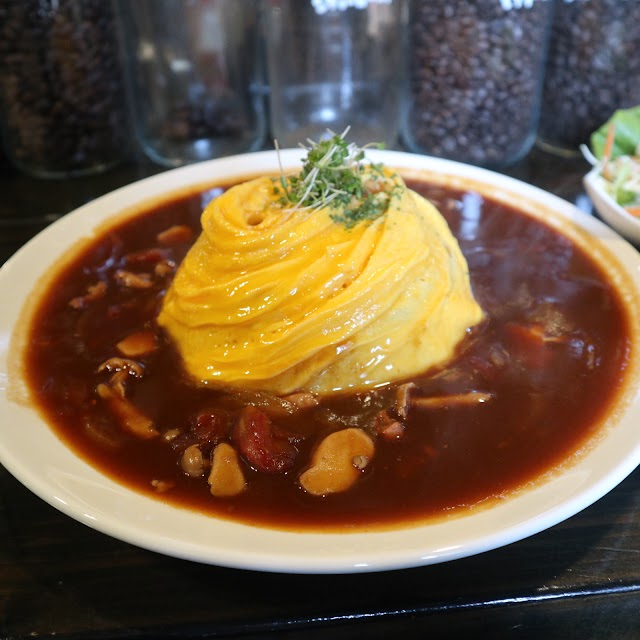
| 営業時間 | 月・水・木・金・土・日 10:00〜18:00 |
|---|---|
| 定休日 | 火曜 |
| 住所 | 秋田県横手市増田町増田中町７４ |
| 予約 | 要確認 — ☎ 0182-23-9201 ／ 公式サイト |
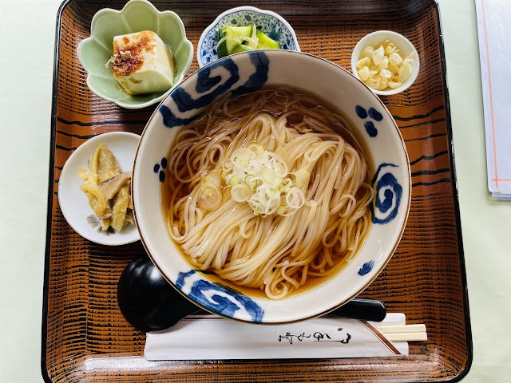
| 営業時間 | 月・火・水・木・金・土・日 9:00〜17:00 |
|---|---|
| 定休日 | なし(要最終確認) |
| 住所 | 秋田県横手市増田町増田中町９４ |
| 予約 | 要確認 — ☎ 0182-45-4190 ／ 公式サイト |
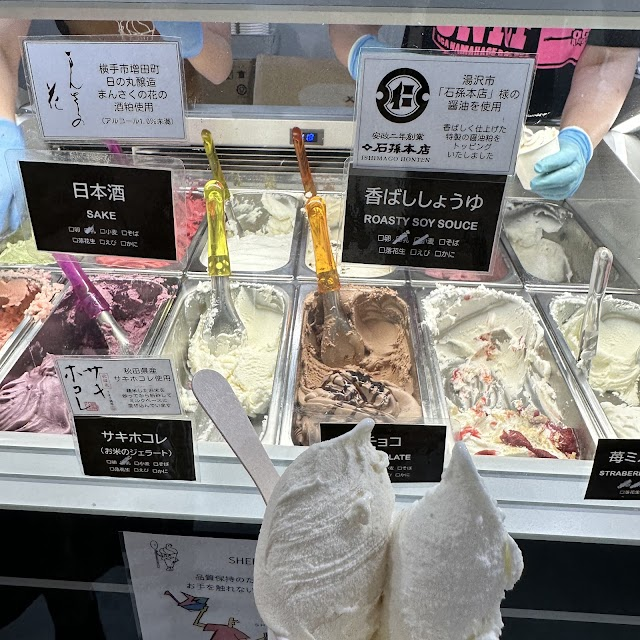
| 営業時間 | 火・水・木 11:00〜18:00 ／ 金・土・日 11:00〜17:00 |
|---|---|
| 定休日 | 月曜 |
| 住所 | 秋田県横手市寿町９−８ 寿ビル 1階 |
| 予約 | 要確認 — ☎ 080-4514-8129 ／ 公式サイト |
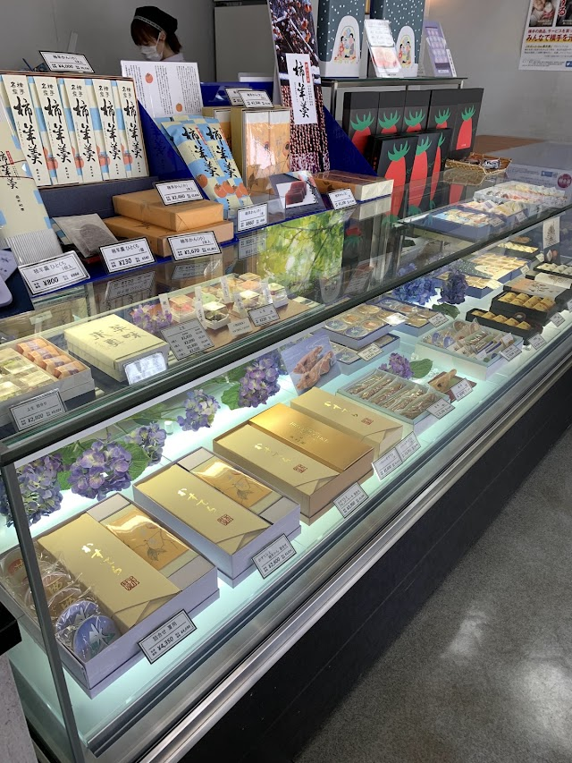
| 営業時間 | 月・火・水・木・金・土・日 9:30〜17:30 |
|---|---|
| 定休日 | なし(要最終確認) |
| 住所 | 秋田県横手市大町５−２３ |
| 予約 | 要確認 — ☎ 0182-32-0700 ／ 公式サイト |
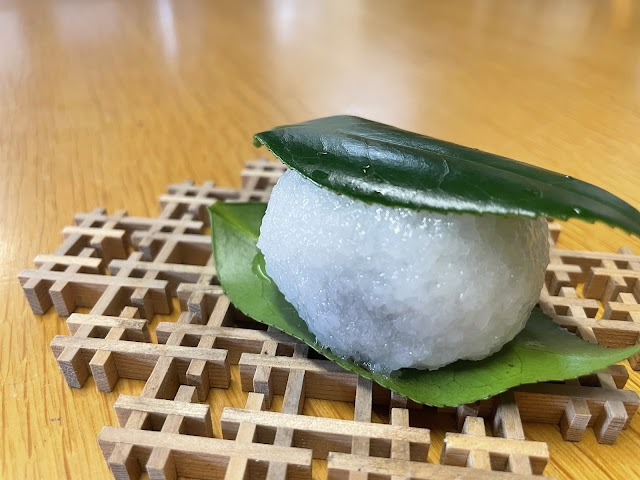
| 営業時間 | 月・火・木・金・土・日 9:30〜17:00 |
|---|---|
| 定休日 | 水曜 |
| 住所 | 秋田県横手市大町８−１４ |
| 予約 | 要確認 — ☎ 0182-32-0736 ／ 公式サイト |
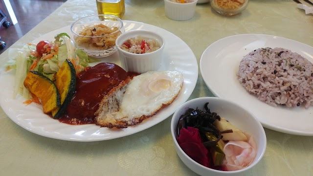
| 営業時間 | 月・火・水・木・金・土・日 11:00〜15:00 |
|---|---|
| 定休日 | なし(要最終確認) |
| 住所 | 秋田県横手市山内土渕小目倉沢４３−２ |
| 予約 | 可 — ☎ 0182-23-6325 |
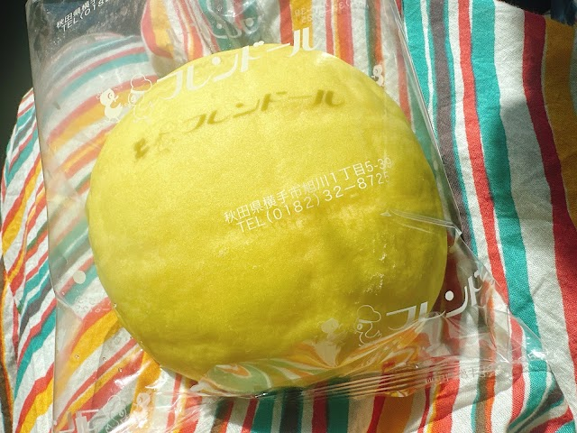
| 営業時間 | 月・水・木・金・土・日 9:30〜17:00 |
|---|---|
| 定休日 | 火曜 |
| 住所 | 秋田県横手市旭川１丁目５−３９ |
| 予約 | 要確認 — ☎ 0182-32-8725 ／ 公式サイト |
本ガイドは個人利用目的で作成。掲載情報は2026年8月時点の調査に基づく。写真出典: Google Maps投稿写真(©各投稿者/Google)。